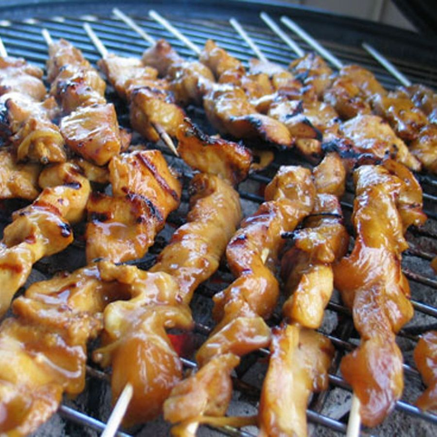
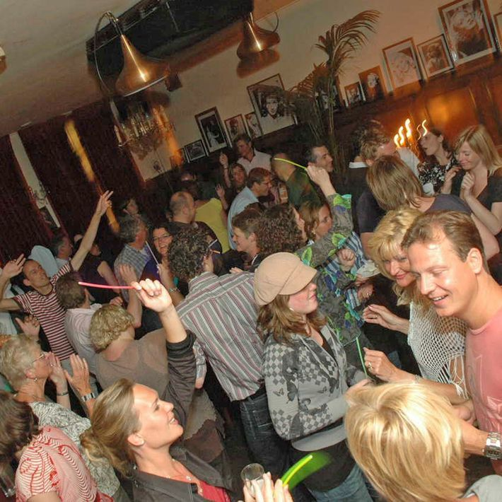
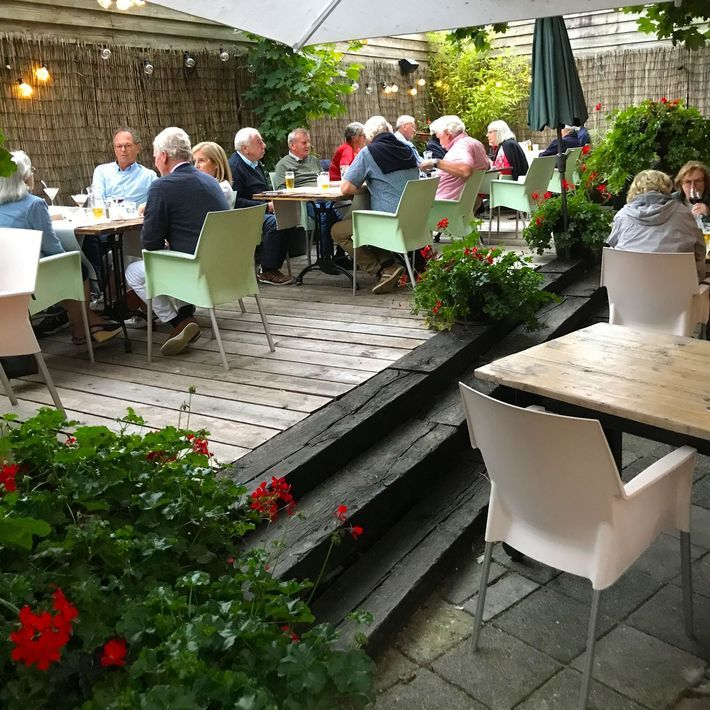

Of je nu wil borrelen, een hapje wil eten of een feestje hebt te vieren. Bij Eetcafé Het Ginneken kan het allemaal.
Een enigszins bescheiden kaart, maar wel met topproducten. Naast onze befaamde kippetjes ook bijvoorbeeld een super burger. Wij serveren de lekkerste kipgerechten, ambachtelijk brood met smeersels, burgers en verrassende dagschotels.





Op vrijdag- en zaterdagavond kun je het gehele café en de tuin gebruiken voor je (besloten) feest van 20 tot 200 personen. Ook op andere dagen kan het, bijvoorbeeld op zaterdag- of zondagmiddag. Wij rekenen hiervoor geen zaalhuur.




Zeker in de fraaie achtertuin zit je goed. Hier schuif je aan voor een borrel, een diner of een lunch. Met een groep of vriendengroep kun je ook een geheel besloten diner of lunch boeken, tegen zeer schappelijke prijzen en geheel in overleg.
Wel graag even reserveren.
Perfect café met prima bediening en uitstekende gelegenheid voor een vergroting of feestje, zeker in de fraaie achtertuin.René
Heerlijk gegeten! Prijs kwaliteit is echt heel goed. Bediening is heel vriendelijk!Anniek
| Maandag | vanaf 16.00 uur |
| Dinsdag | gesloten |
| Woensdag | vanaf 16.00 uur |
| Donderdag | vanaf 16.00 uur |
| Vrijdag | vanaf 16.00 uur |
| Zaterdag | vanaf 17.00 uur |
| Zondag | vanaf 17.00 uur |
Gedurende de zomerperiode hebben wij aangepaste openings- en sluitingstijden. Om teleurstellingen te voorkomen neem je contact op met Toon.
Eetcafé Het Ginneken
Ginnekenweg 247
4835 NB Breda
076 565 1284
06 5379 4141 (Toon, ook WhatsApp)
info@hetginneken.nl